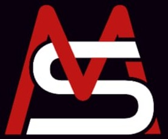

“Ter alguém responsável cuidando e auxiliando faz toda diferença. Matheus se mostrou um ótimo representante além de um ser humano incrível, nunca deixou de responder.”
Paula Batista★★★★★ · Google

Matheus Silva Advogado · OAB/AC 5292 Já sou cliente WhatsAppTrabalhista, INSS e Consumidor. Você conta o que aconteceu pelo WhatsApp e o Dr. Matheus explica o seu caminho, sem juridiquês. Em todo o Acre, e nas causas federais, em todo o Brasil.
5,0 ★★★★★ 60 avaliações no Google“Ter alguém responsável cuidando e auxiliando faz toda diferença. Matheus se mostrou um ótimo representante além de um ser humano incrível, nunca deixou de responder.”
“Tirou minhas dúvidas de forma humanizada, é coerente, sem burocracia. Obrigado, indico.”
“Advogado excepcional, muito esforçado, trabalha com dignidade e compreensão ao próximo. Excelente profissional.”
“Fui muito bem atendida pelo Dr. Matheus Silva. Ele é um advogado extremamente profissional, ético e dedicado.”
“Fui atendida bem mais rápido que eu esperava. Obrigada Matheus pela atenção e sua competência.”
“Obrigada por seu ótimo desempenho no seu trabalho, contarei sempre com o senhor.”
“Ter alguém responsável cuidando e auxiliando faz toda diferença. Matheus se mostrou um ótimo representante além de um ser humano incrível, nunca deixou de responder.”
“Tirou minhas dúvidas de forma humanizada, é coerente, sem burocracia. Obrigado, indico.”
“Advogado excepcional, muito esforçado, trabalha com dignidade e compreensão ao próximo. Excelente profissional.”
“Fui muito bem atendida pelo Dr. Matheus Silva. Ele é um advogado extremamente profissional, ético e dedicado.”
“Fui atendida bem mais rápido que eu esperava. Obrigada Matheus pela atenção e sua competência.”
“Obrigada por seu ótimo desempenho no seu trabalho, contarei sempre com o senhor.”
No dia a dia, a equipe acompanha prazos, documentos e movimentações. As decisões importantes passam pelo advogado titular.
O escritório nunca pede dinheiro, PIX ou taxa para você receber valores de processo. Recebeu esse tipo de mensagem, mesmo com o nome ou a foto do Dr. Matheus? Não pague e confirme pelo número oficial.
Número oficial: (68) 9 9999-3427Advogado inscrito na OAB/AC 5292, à frente de uma sociedade individual de advocacia em Rio Branco. Atendemos trabalhadores, segurados do INSS e consumidores que precisam de alguém que leia o caso com atenção.
Condições, prazos estimados e riscos reais ficam no contrato. Nada é acertado de boca.
Cada etapa explicada em linguagem simples, com aviso das movimentações.
WhatsApp, e-mail e videochamada. Em causas federais, qualquer estado.
Trabalhista, Previdenciário e Consumidor. Sem dispersão.
Cada guia explica a regra, o que fazer agora e quais documentos separar.
Você conta o que aconteceu pelo WhatsApp e analisamos a situação. Havendo caso, explicamos como funciona e as condições ficam definidas em contrato, por escrito.
Depende da área — escolha sua situação lá em cima e veja a lista. Depois de ler seu caso, dizemos exatamente o que ainda falta.
Sim. Todo o Acre e, em causas federais (INSS, consumidor contra empresas nacionais), qualquer estado por WhatsApp e videochamada.
Trabalhistas: 6 a 18 meses. INSS: 8 meses a 2 anos. Consumidor: geralmente mais rápido. Não há como garantir prazo: depende do juízo, da complexidade e da outra parte.
Não. Conversa, documentos, contrato e acompanhamento acontecem pela internet, e as audiências costumam ser por videochamada. Se preferir conversar pessoalmente, marcamos horário no escritório corporativo da OAB/AC, no Portal da Amazônia.
Segunda a sexta · (68) 9 9999-3427 · @adv_matheus